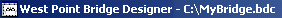

The Title Bar is the rectangular area at the top of the Bridge Design Window. It displays the words "Bridge Designer 2016," followed by the name of your current .
If the Bridge Design Window is not maximized, you can move it around your screen by clicking anywhere in the Title Bar and dragging the window to the desired location.